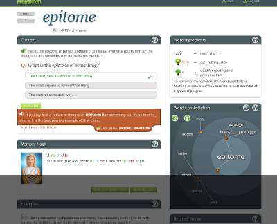

Personal Uses
Banks have improved so much through AI. Many people today are busy and unfortunately can not travel to the bank to deposit a check. Therefore, online banking apps were introduced with the ability to deposit checks, check balances, and review previous transactions. With the incorporation of AI, the database can observe the customer’s transaction patterns and more effectively identify suspicious purchases. It also increases the options available to the customers. For example, Discover Card has introduced a new feature that allows customers to “freeze” their account if their card is lost, blocking any new purchases but they remain able to pay recurring bill payments. In addition, many companies are utilizing chatbots to notify customers and provide aid in customer service to leave human assistance for complicated problems and reduced wait time. One of the largest banking companies, Bank of America unveiled an artificially intelligent chatbot Erica. Erica provides customers with notifications, savings, updates of FICO scores, and simplifies online bill payments. Although she currently is unavailable to customers, many are excited for her anticipated arrival. Eno, from Capital One, is another chatbot that was incorporated with Amazon Alexa last year. Now Capital One customers have the option to check upcoming bills, account balances, and pay credit card from a simple voice activation.
Social Media has become a large part of our culture with 81% of US Americans with a social media profile from Snapchat, Instagram, Facebook, and Twitter. With new information being uploaded every second throughout the world, it is difficult for social media marketing specialists to follow the many patterns and trends of social media. AI is aiding companies with content creation, consumer intelligence, customer service, influencer marketing, and content optimization. A social content platform, called Twizoo utilizes AI in content creation. In this partnership, it allows companies to immediately recognize and incorporate media content on a website. According to Lux Narayan, CEO of Unmetric, an AI-powered social media metrics company, he compares consumer intelligence to, “pulling out the needles from the haystack, filtering out signals from noise and finding interesting relevant signals for a brand that it can take forward into actionable insights”. Companies are combating this problem with programs like Converseon. Converseon is a virtual consultant that utilizes machine-learning to observe social and voice-of-customer-data, highlighting meaningful data in the constant addition of new information. In customer service, chatbots such as Conversocial enable people to easily find help relevant to their problems, besides the generic Help buttons that almost never have an answer to your problem, through social channels. Influencer marketing is an important in social media as Narayan states, “It's imperative that brands have more intelligence into how they associate with certain influencers, making sure that they're a fit for the brand’s DNA.” To find the perfect match companies are incorporating a platform known as InsightPool,that searching from over 600 million influencers with a higher match rate than pure human pairings. The New York Times has created Blossom to increase content optimization by scanning thousands of odd articles to find what audiences showed the most interest toward and promote for a larger article.
 Smart personal assistants are also becoming very popular because of AI. These assistants can give you reminders about plans or meetings, they can answer any questions, play music, and order items online. These assistants provide helpful aid to companies allowing tasks to be completed quickly and efficiently. For example, Instead of wasting time writing events on a calendar one can simply asks these assistants to remember the date and remind you. Many companies are embracing this new opportunity. Apple created Siri on October 4, 2011, this was one of the first smart personal assistants . Siri’s capabilities include, calling people, texting people, playing music, and doing many more things.The company Amazon recently released with the Amazon Echo in 2014. Echo is synced with the customer’s Amazon account providing easy access to music and online shopping. In 2015 alone, Amazon sold more than 11 million Echos. Google began utilizing this technology in the Google Home which can control different facilities in a house such as lighting and temperature in addition the abilities of its competitors. Overall, many consumers are overjoyed about these computerized personal assistants, due to their capability of simple voice activation to complete a task in seconds without forcing consumers to leave the comfort of their home.
Smart personal assistants are also becoming very popular because of AI. These assistants can give you reminders about plans or meetings, they can answer any questions, play music, and order items online. These assistants provide helpful aid to companies allowing tasks to be completed quickly and efficiently. For example, Instead of wasting time writing events on a calendar one can simply asks these assistants to remember the date and remind you. Many companies are embracing this new opportunity. Apple created Siri on October 4, 2011, this was one of the first smart personal assistants . Siri’s capabilities include, calling people, texting people, playing music, and doing many more things.The company Amazon recently released with the Amazon Echo in 2014. Echo is synced with the customer’s Amazon account providing easy access to music and online shopping. In 2015 alone, Amazon sold more than 11 million Echos. Google began utilizing this technology in the Google Home which can control different facilities in a house such as lighting and temperature in addition the abilities of its competitors. Overall, many consumers are overjoyed about these computerized personal assistants, due to their capability of simple voice activation to complete a task in seconds without forcing consumers to leave the comfort of their home.
Commerical Uses
Artificial Intelligence has become implemented in transportation throughout the country in many well known companies. One popular car service, Uber, incorporated AI and Machine Learning to more efficiently transport customers from point A to point B. Uber has high hopes for the future by utilizing this new technology, predicting rider demand of “surge pricing”, and statics on optimal pickup locations. Surging prices are a problematic occurrence as occasionally, the limited amount of drivers can not fulfill the consumer demand resulting in a sharp price increase for a short period of time. With machine learning, Uber can predict which times have statistically shown to be the busiest and compensate with a larger amount of drivers, resulting in a more profitable company. This predicting program can also be utilized in similar situations for UberEats. In 2014, Uber began partnering with restaurants to create an online food ordering and delivery platform. Likewise in Uber’s car service, Uber Eats AI has the ability to identify which times are the busiest, schedule more workers to handle massive increase in consumer demand, decrease the time for meal delivery, and create a larger profit.
In addition to AI advancements in car transportation but also commercial airlines to improve operational efficacy, speed and customer satisfaction. The number one airline, American Airlines, have made a large push toward this new technology by developing an app allows customers to detect the luggage size and prepay for additional expenses before stepping foot in the airport. Delta Airplanes also hopped on the bandwagon with their creation of automated self-service bag checking in May of 2017. These new kiosks utilize facial recognition technology for identity verification as well as match luggage to their owners. Although AI does not have the advancements to pilot a plane, many new opportunities to help customers have a successful flight experience.
Companies are utilizing Artificial Intelligence to better cater to consumer needs by reviewing past interests or purchases. One example is Google News, which pairs geolocation with AI to provide customers with stories aligning with their location and recent interests. Amazon utilizes previous customer interests to create product recommendations based from items previously purchased, displaying products of similar styles to previously bought items that might interest the customers. Siri incorporates machine learning and voice recognition to adapt to the customers needs and commands such as buying the usual dog food when told the dog food is gone, or perhaps when dinner is ready turning on a certain music playlist. The possibilities are endless.
Many are excited about the news of “Just Walk Out Technology” in stores such as Amazon Go that allows customers to simply put an item in a bag and walk out. This new E-commerce technology utilizes artificial intelligence and cameras to track items that customers pick off the shelves and instantly charging it to their Amazon account. First, customers download the Amazon Go app, link it with a pay method, and scan their account at one of the kisokos. Then consumers simply place their desired items in a bag. When customers leave they walk through scanners that identify and charges the item to the customers corresponding Amazon account in the large AI database. The first Amazon Go store was developed in Seattle Washington. Customers were overjoyed with no checkout lines and the ability to pick an item off the shelve and simply walk out. This “Just Walk Out Technology” is becoming an international sensation with similar stores in China called BingoBox soon opening 200 stores across 29 cities throughout the country.
Educational Uses

Today there are many different online websites that will help students individualize their learning. Many parents today are concerned about their kids falling behind because they do not fully understand the content that they are learning. With Khan Academy students can focus on certain topics that they do not understand. Khan Academy shows the student videos and allows the students to answer questions to make sure that they are understanding the topic. To make sure that the students fully understand the topic they have to answer five questions correct in a row so they can move on.If a teacher feels like a student is advanced in a subject the student can even go on and learn more advanced topics at their own pace, this will help them feel like they actually have a challenge. Khan Academy can be used for every student, student can use it to learn how to count, read, and even study for the SAT or the ACT.
Teachers now have the technology to be able to collect and hand out assignments online with Google Classroom. Google Classroom allows the teachers to give the students reminders about upcoming test and quizzes, teachers can also hand out assignments to the students and when they are done they just turn it back in to the teacher through google classroom. Most schools today are based around computers. Google Classroom even allows kids to do their work even if there is no school. Many schools use Google Classroom because it is free and all you need is a google email to be able to access it.
Go My Access is a website that allows students to type up an essay and automatically get instant feedback. This allows the student to see how many spelling errors, grammar errors, and even capitalization errors they have. There are even different plagiarism websites, these websites will show the students if their essays match up with any online resources or books, all the student have to do is copy and paste their essays into the website and wait to see how much they plagiarized
Recreational Uses
Many sports teams are now using Artificial Intelligence . Alan Fern, an Oregon State University researcher is trying to teach computers how to understand football and the coaches plays. This is very big because if these computers can understand football then it will help the coach know exactly what each player needs to work on. This also allows each player to know exactly what they need to work on in order to improve.Also, if a coach is unable to coach a game for some reason then the computer will be able to tell the players what to do in order to win, if it knows how to do all of the plays and understands the game.
The NBA is using Artificial Intelligence to allow people to ask them questions about their franchise. The Sacramento Kings is only one of the teams that uses this system. The name of the chat box is KAI, this is an acronym for Kings Artificial Intelligence.The chat box works through Facebook messenger, so if a person about the Kings then they only need to create a free Facebook account. This is an amazing way to connect with people because these chat boxes are open all the time so if someone ever has a question about their franchise then they can ask it.
Artificial Intelligence is even being used in music, There is one website called Amper Music. This website allows people to make a song in a couple of seconds. All the person has to do is create a free account answer a couple of questions about the type of music that they want and in a matter of seconds the computer will play a song that you never heard before, also it comes up with a new song everytime. The person that is creating the song can even add vocals to it. The song “I AM” was written and recorded on this website and it was released on August 21, 2017, this is the first official song that has been written by artificial intelligence.
Click here and create your own AI music https://www.ampermusic.com/
Research Uses
The Soul Machine Baby X is a virtual baby that is part of a project led by award winning Dr. Mark Sagar to develop, “intelligent, emotionally responsive avatars that can learn and react just like you”. The virtual baby acts similar to humans with its responses, learning, and expression. For example, when the viewer holds up a picture baby will focus on the picture and pronounce the word for the picture. Sagar was excited to undertake this challenge of creating “ultimate animation”, a character that could produce independent actions based on its own digital consciousness. This knowledge can then be applied to augmented/virtual reality video games to improve the behavior of autonomous characters. Sagar utilized computical models theoretical functions of the brain, biomechanically- based model of the face, and “Brain Language” controlling speech, and reaction to voice and visual stimulus. This causes Baby X to portray movement closely mimicking that of a human. Although Baby X’s technology is still developing , Sagar has high expectations announcing the potential of full body avatars in 12 months to aid in human’s day-to-day lifestyle.
Iris AI is helping scientists today by providing easier access for people to get information. Iris AI works as a search tool to give scientists abilities to find reliable information without knowing key vocabulary about the topic. This allows people that are beginning to learn the topic to fully understand the new context. Iris AI has the ability to read the viewers desired scientific report, quickly identifies the main points of the article and create a “science map”. Readers can then select a main point from the map that is then split into subsections and read the corresponding information for that particular section. This provides readers with the ability to easily pinpoint the information of interest as well as simplify an otherwise intimidating article for a beginner to the topic. An additional benefit is Iris AI can quickly find other articles related to the readers field of interest not only providing a starting point but a path of deeper understanding to the topic. Iris AI incorporates artificial intelligence to advance the computer’s computational power and accessibility to large amount of information, and quickly spitting out articles related to a particular field of interest.
Input your own scientific paper of interest and watch Iris AI provide a "science map". https://the.iris.ai